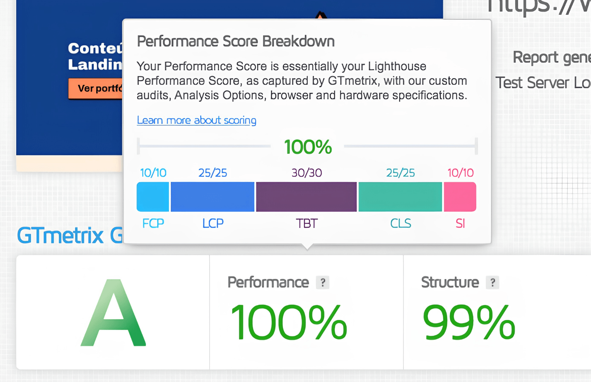
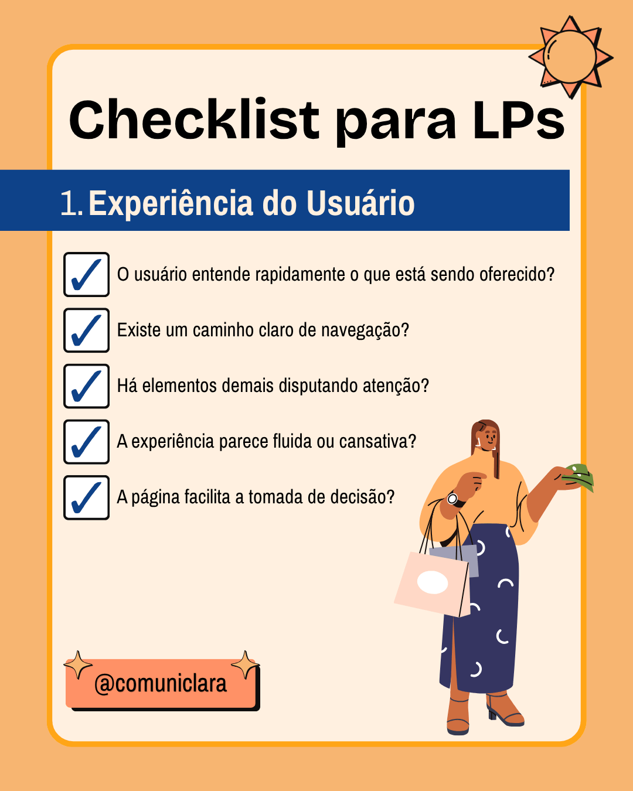
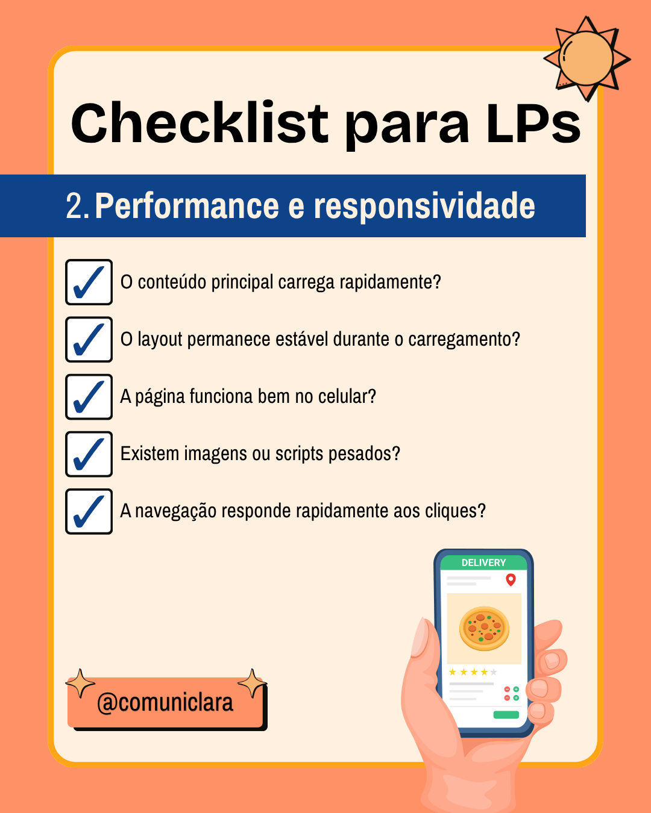
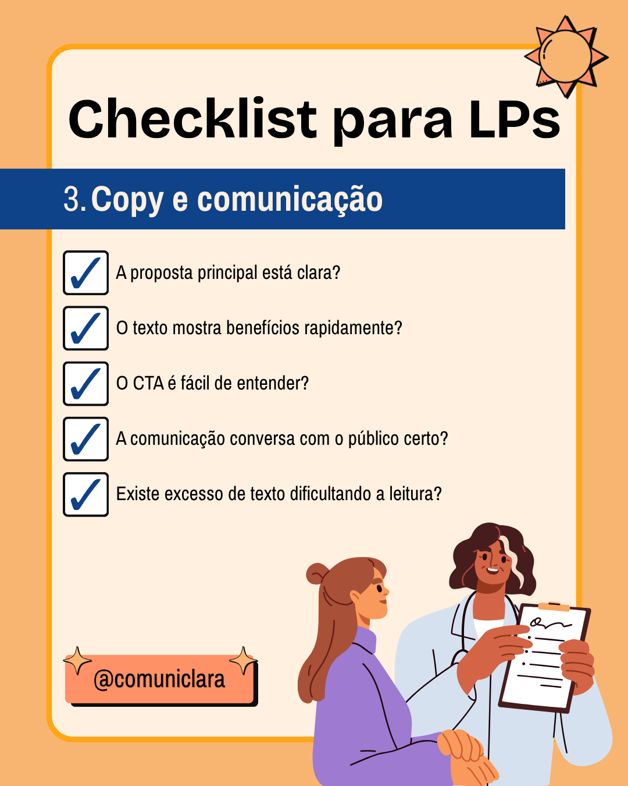
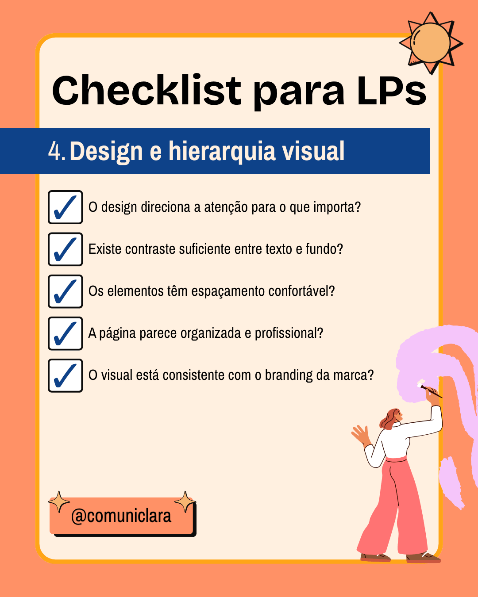

Landing Page de alta conversão: o que ninguém te conta
Sua landing page não converte? Você gasta dinheiro com tráfego pago e não vê retorno? Saiba o que ninguém te conta sobre ter uma landing page de alta conversão e o que é preciso para aumentar as chances de fechar negócio.
No final deste artigo, você terá um checklist para identificar se a sua página de vendas tem alto impacto para seu público e saberá analisar os resultados de velocidade no teste do GTmetrix.
Quer saber mais? Deixe o sol entrar! ☀️
Facilite a vida do usuário e converta mais
Quando o público entra na landing page, ele quer entender rápido a oferta e resolver seu problema. Mas e quando a plataforma empaca ou não proporciona uma experiência fluida de navegação? Quem perde não é somente o usuário, mas também o dono da marca.
Uma landing page bem estruturada não depende somente de hierarquia visual, escrita persuasiva ou um design consistente com o branding. Ela também precisa ser bem fundamentada no código. Já ouviu falar que mais vale o arroz e feijão bem feito do que um banquete cheio de promessas e mal executado?
A falta de:
- responsividade para dispositivos móveis
- código limpo
- estabilidade do layout
- velocidade de carregamento do conteúdo principal
- tempo de resposta lento em dispositivos móveis
assim como o excesso de:
- elementos visuais disputando atenção ao mesmo tempo
- animações e efeitos desnecessários
- pop-ups e interrupções no fluxo de leitura
- múltiplos caminhos competindo pela atenção do usuário
- peso de imagens e scripts na página
prejudicam a experiência do usuário ao aumentar o esforço mental, a frustração e a dificuldade de manter o foco na página.
Performance sozinha não garante conversão, mas faz parte, e impacta muito! Quer ver a performance deste site como exemplo? Basta um teste rápido no site do GTmetrix.
Entenda a ferramenta e a importância de obter nota A no GTmetrix
GTmetrix é uma ferramenta que ajuda desenvolvedores e donos de sites ou landing pages a identificar e corrigir problemas que deixam a plataforma mais lenta. Possui recursos gratuitos e pagos. Entre as principais funcionalidades, estão:
- Notas e diagnóstico: atribui uma nota de A a F ao site, avaliando a performance geral e a estrutura da página
- Métricas de experiência: analisa os Web Vitals do Google, medindo aspectos como tempo de carregamento do conteúdo principal, estabilidade visual e interatividade.
- Gráfico em Cascata:exibe um gráfico detalhado com todos os arquivos carregados na página (imagens, scripts, fontes), facilitando a identificação do que está atrasando a abertura do site.
O que significa cada métrica no GTmetrix?

FCP (First Contentful Paint)
Mostra quanto tempo leva para o primeiro elemento visível aparecer na tela.
Pode ser:
- um texto
- uma imagem
- um bloco de cor
Essa métrica impacta muito a percepção de velocidade, porque o usuário prefere ver algo carregando do que uma tela completamente vazia.
LCP (Largest Contentful Paint)
Mede quanto tempo o principal conteúdo da página demora para aparecer. Na prática é quando o usuário finalmente sente que a página “abriu”.
TBT (Total Blocking Time)
Mede quanto tempo a página fica “travada” sem responder direito às interações.
Isso acontece muito quando:
- existem scripts pesados
- excesso de JavaScript
- muitos efeitos
CLS (Cumulative Layout Shift)
Mede o quanto os elementos “pulam” enquanto a página carrega.
Exemplo:
- quando clica em um botão
- o layout mexe
- quando clica no lugar errado
SI (Speed Index)
Mede a velocidade com que o conteúdo visível da página aparece para o usuário durante o carregamento.
Enquanto outras métricas analisam elementos específicos, o Speed Index observa a sensação geral de rapidez da página.
Checklist: “Boas práticas de otimização para uma landing page que converte”
Agora que você já entende como a performance influencia a experiência do usuário, chegou a hora de analisar os principais pontos que fazem diferença em uma landing page de alta conversão.




No fim, tudo se resume à experiência
Uma landing page de alta conversão não depende somente de textos persuasivos ou um design bonito. A experiência do usuário durante a navegação também influencia diretamente a percepção da marca, a permanência na página e a tomada de decisão.
Velocidade, estabilidade visual, organização das informações e clareza na comunicação ajudam a reduzir atritos e tornam a experiência mais confortável para quem acessa a página, especialmente em dispositivos móveis.
O objetivo deve ir além das notas altas no GTmetrix e ter uma página agradável, usável, útil e fácil de navegar, sem excessos que prejudiquem a experiência do usuário. Lembre-se: converter mais também significa facilitar a vida do seu público-alvo.
Precisa de uma landing page de alta conversão? Vamos conversar! ☀️
Contate-me!